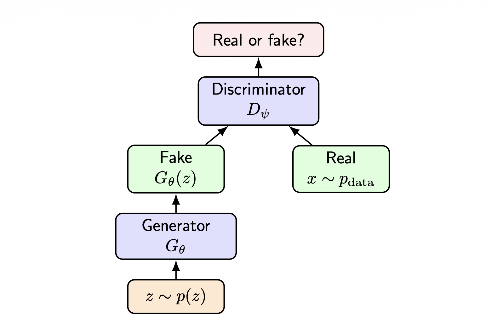
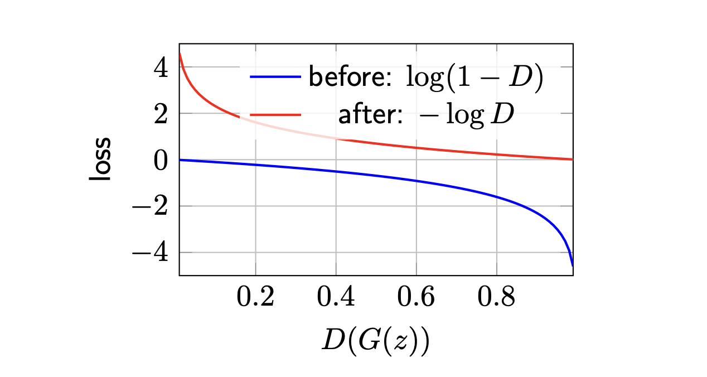
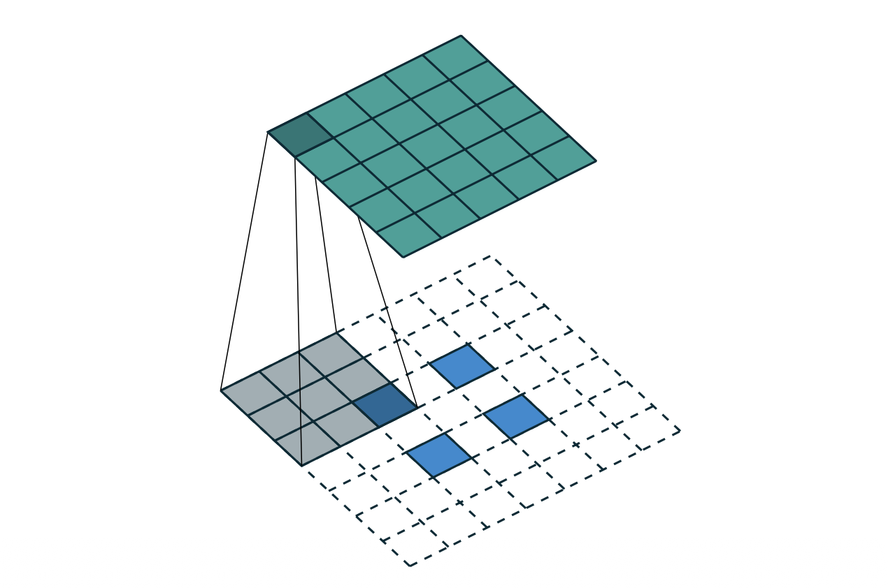
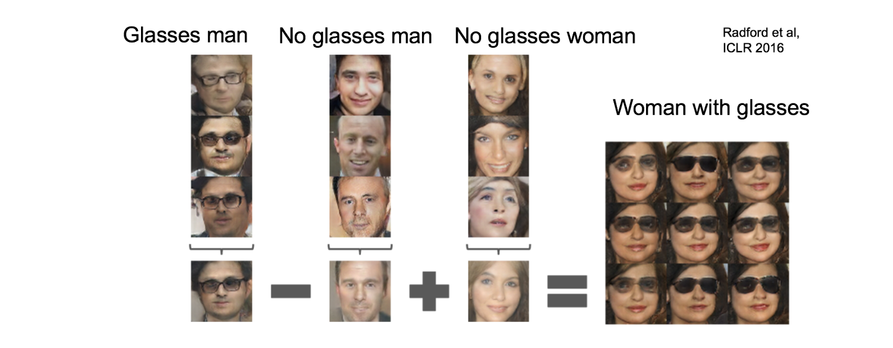

1. Introduction: 생성 모델의 분류 (Taxonomy of Generative Models)
이전 강의에서 우리는 변분 오토인코더(Variational Autoencoders, VAE)에 대해 다루었습니다. 이미지 데이터 \(x\)에 대한 우도(Likelihood) 인 \(\log p_{\theta}(x)\)를 직접 최적화하는 것은 계산적으로 매우 어렵기 때문에(Intractable), VAE는 대신 증거 하한(Evidence Lower Bound, ELBO)을 유도하여 이를 최대화하는 간접적인 방식을 취했습니다.
딥러닝 기반 생성 모델은 확률 밀도(Density)를 어떻게 다루느냐에 따라 크게 세 가지로 분류할 수 있습니다. 본 포스트에서는 VAE와 대비되는 자기회귀 모델(Autoregressive Models)과 그 구체적 구현체인 PixelRNN/PixelCNN을 중점적으로 살펴봅니다.
| 모델 유형 | 밀도(Density) 평가 | 훈련 목적 함수 (Training Objective) | 샘플링 방식 (Sampling) |
|---|---|---|---|
| VAE | \(p_{\theta}(x)=\int p(z)p_{\theta}(x|z)dz\) (직접 계산 불가) | ELBO 최대화 (Maximize ELBO) | 빠름: 잠재 변수 \(z \sim p(z)\) 샘플링 후 디코딩 |
| Autoregressive | \(p_{\theta}(x)=\prod_{i}p_{\theta}(x_{i}|x_{<i})\) (명시적 계산 가능) | 정확한 로그 우도 최대화 (Maximize exact log-likelihood) | 느림: 한 번에 하나의 픽셀/토큰씩 순차적 샘플링 |
| GAN | \(p_{\theta}(x)\) 를 명시적으로 평가하지 않음 (Implicit) | 적대적 두 플레이어 게임 (Adversarial two-player game) | 빠름: \(x=G_{\theta}(z)\) |
- 위 표에서 볼 수 있듯, 자기회귀 모델의 가장 큰 특징은 VAE나 GAN과 달리 정확한 우도(Exact Likelihood)를 제공한다는 점입니다.
2. 자기회귀 모델의 수학적 공식화 (Mathematical Formulation)
2.1. 연쇄 법칙(Chain Rule)을 통한 인수분해
- 자기회귀 모델은 복잡한 결합 확률 분포를 조건부 확률의 곱으로 분해합니다. 어떤 순서를 가진 확률 변수들의 집합 \(x = (x_1, x_2, \dots, x_T)\)가 주어졌을 때, 확률의 연쇄 법칙에 의해 결합 확률 \(p(x)\)는 다음과 같이 전개됩니다.
\[p(x) = p(x_1)p(x_2|x_1)p(x_3|x_1,x_2) \dots p(x_T|x_{<T})\]
- 이를 수식으로 간결하게 표현하면 다음과 같습니다:
\[p(x) = \prod_{t=1}^{T} p(x_t | x_{<t})\]
- 자기회귀 모델링(Autoregressive Modeling)은 이 수식에 기반하여, 변수들의 순서를 정한 뒤 신경망을 훈련시켜 이전 변수들(\(x_{<t}\))이 주어졌을 때 다음 변수(\(x_t\))의 확률 분포를 예측하도록 만드는 기법입니다.
2.2. 이미지 데이터로의 확장: 래스터 스캔 순서 (Raster-scan Ordering)
이미지 데이터에 자기회귀 모델을 적용하기 위해서는 2차원 그리드 형태의 픽셀들을 1차원 시퀀스로 평탄화(Flatten)해야 합니다. 이를 위해 보통 래스터 스캔 순서(Raster-scan order)를 사용합니다.
픽셀들은 위에서 아래로, 좌에서 우로 (마치 글을 읽듯) 행 단위로 정렬됩니다.
따라서 \(t\) 번째 픽셀을 생성할 때, 조건이 되는 ’이전 픽셀들’은 이미지 상에서 \(t\) 번째 픽셀의 위쪽(Above) 또는 왼쪽(Left)에 위치한 픽셀들이 됩니다.
이미지의 크기가 \(H \times W \times C\) (높이, 너비, 채널 수)일 때, 총 변수의 개수 \(T\)는 \(T = H \times W \times C\)가 됩니다. 이때 로그 우도는 다음과 같이 전개됩니다:
\[\log p_{\theta}(x) = \sum_{t=1}^{T} \log p_{\theta}(x_t | x_{<t})\]

2.3. RGB 채널 순서링 (RGB Channel Ordering)
- 컬러 이미지의 경우 각 픽셀 \(i\)는 3개의 색상 채널 \((x_{i,R}, x_{i,G}, x_{i,B})\)를 가집니다. 이 채널 간에도 의존성을 부여하기 위해 추가적인 인수분해를 수행합니다. 일반적으로 R \(\rightarrow\) G \(\rightarrow\) B 순서로 조건을 부여합니다:
\[p(x_i | x_{<i}) = p(x_{i,R} | x_{<i}) \cdot p(x_{i,G} | x_{<i}, x_{i,R}) \cdot p(x_{i,B} | x_{<i}, x_{i,R}, x_{i,G})\]
- 어떤 순서(예: B \(\rightarrow\) G \(\rightarrow\) R)를 사용하든 수학적으로 무방하지만, 모델을 구성할 때 반드시 하나의 순서를 고정해야 합니다.
3. 훈련 및 샘플링 (Training and Sampling)
3.1. 정확한 로그 우도 최대화를 통한 훈련
- 자기회귀 모델은 VAE의 하한(ELBO) 근사와 달리, 정확한 로그 우도(Exact log-likelihood)를 직접 최대화하는 방식으로 훈련됩니다.
\[\max_{\theta} \mathbb{E}_{x \sim \mathcal{D}_{train}} \left[ \sum_{t=1}^{T} \log p_{\theta}(x_t | x_{<t}) \right]\]
- 이것은 지도 학습(Supervised-learning)의 관점으로 해석할 수 있습니다. 이전 픽셀들 \(x_{<t}\) 가 입력(Feature)으로 주어졌을 때, 다음 픽셀 \(x_t\) (Target)를 예측하는 분류 문제와 같습니다. 픽셀 값이 이산적(Discrete, 예: 0~255)이므로, 각 조건부 확률 분포는 픽셀 값에 대한 범주형 분포(Categorical distribution)로 모델링할 수 있습니다.
3.2. 순차적 샘플링과 Trade-off
- 훈련 시에는 정답 이미지 \(x\)가 모두 주어져 있으므로 연산을 병렬화할 수 있는 여지가 있지만, 새로운 이미지를 생성(Sampling)할 때는 반드시 순차적(Sequential)이어야 합니다.
- \(x_1 \sim p_{\theta}(x_1)\)
- \(x_2 \sim p_{\theta}(x_2 | x_1)\)
- \(x_3 \sim p_{\theta}(x_3 | x_1, x_2)\)
- \(\dots\)
- \(x_T \sim p_{\theta}(x_T | x_{<T})\)
- 여기서 자기회귀 모델의 핵심적인 딜레마(Tradeoff)가 발생합니다. 모델은 정확한 우도를 계산할 수 있고 훈련이 안정적이라는 큰 장점이 있지만, 생성 과정은 픽셀을 한 번에 하나씩 샘플링해야 하므로 매우 느리다는 단점이 있습니다.
4. PixelRNN과 PixelCNN
- 이미지의 이전 컨텍스트 \(x_{<t}\)를 모델링하기 위해 어떤 신경망 아키텍처를 사용할 것인지에 따라 두 가지 주요 모델로 나뉩니다.
4.1. PixelRNN
- 구조: 픽셀 공간 전체에 걸쳐 순환 신경망(RNN, Recurrent Neural Networks) 연결을 사용합니다.
- 장점: RNN의 메모리 특성 덕분에 이미지 내의 매우 긴 의존성(Long-range dependencies)을 효과적으로 포착할 수 있습니다.
- 단점: 연산이 순차적이므로 훈련 시 병렬 처리가 어렵고 계산 비용이 매우 높습니다.
4.2. PixelCNN과 마스크 합성곱 (Masked Convolution)
PixelRNN의 훈련 속도 문제를 극복하기 위해 제안된 것이 PixelCNN입니다. CNN(Convolutional Neural Networks)을 사용하면 훈련 시 모든 픽셀에 대한 특성(Features)을 한 번에 병렬로 계산할 수 있습니다. 하지만, 일반적인 CNN 필터는 ‘미래의 픽셀’ 정보까지 참조할 수 있기 때문에, 자기회귀 조건(미래 정보를 보면 안 됨)을 위반하게 됩니다.
이를 방지하기 위해 PixelCNN은 마스크 합성곱(Masked Convolution)을 도입합니다.

- 합성곱 계층에서 \(p_{\theta}(x_t | x_{<t})\)는 미래의 픽셀 \(x_t, x_{t+1}, \dots\)에 의존해서는 안 됩니다. 이를 구현하기 위해 합성곱 필터 가중치 행렬에 마스크를 곱하여 미래 픽셀 방향의 가중치를 0으로 만듭니다.
Mask A vs Mask B
안정적인 정보 흐름을 제어하기 위해 PixelCNN은 두 종류의 마스크를 혼용합니다.
1. Mask A (첫 번째 레이어 적용)
- 네트워크의 첫 번째 레이어에서는 필터 정중앙(현재 픽셀 위치)의 값도 0으로 마스킹해야 합니다. 현재 입력이 자기 자신의 값을 그대로 다음 레이어로 전달해 버리면(Cheating), 올바른 조건부 확률 학습이 이루어지지 않기 때문입니다. \[ \text{Mask A} = \begin{bmatrix} 1 & 1 & 1 & 1 & 1 \\ 1 & 1 & 1 & 1 & 1 \\ 1 & 1 & 0 & 0 & 0 \\ 0 & 0 & 0 & 0 & 0 \\ 0 & 0 & 0 & 0 & 0 \end{bmatrix} \]
2. Mask B (이후 레이어 적용)
- 두 번째 레이어부터는 이미 현재 공간적 위치의 은닉 특성(Hidden feature)이 이전 픽셀들 정보만으로 구성되어 있습니다. 따라서 중앙 위치의 값을 사용할 수 있도록 중앙 가중치를 1로 둡니다. 단, 미래 픽셀 영역은 여전히 0으로 유지합니다. \[ \text{Mask B} = \begin{bmatrix} 1 & 1 & 1 & 1 & 1 \\ 1 & 1 & 1 & 1 & 1 \\ 1 & 1 & 1 & 0 & 0 \\ 0 & 0 & 0 & 0 & 0 \\ 0 & 0 & 0 & 0 & 0 \end{bmatrix} \]
이러한 마스킹 기법 덕분에, PixelCNN은 훈련 시에는 전체 이미지에 대해 병렬 연산(Fast training)을 수행하고, 샘플링 시에는 순차 생성(Slow sampling)을 하는 비대칭적 효율성을 얻게 됩니다.
5. Summary: 자기회귀 모델 요약
- 마지막으로 PixelRNN과 PixelCNN의 핵심 특성을 요약 비교합니다.
| 특징 | PixelRNN | PixelCNN |
|---|---|---|
| 메커니즘 (Mechanism) | 픽셀에 걸친 순환 의존성 (Recurrent dependencies) | 마스크 합성곱 (Masked convolutions) |
| 훈련 속도 (Training) | 매우 순차적 (More sequential) | 픽셀 전체 병렬 연산 (Parallel over pixels) |
| 샘플링 (Sampling) | 순차적 (Sequential) | 순차적 (Sequential) |
| 강점 (Strength) | 긴 의존성 포착 가능 (Long-range dependencies) | 효율적인 훈련 속도 (Efficient training) |
| 약점 (Weakness) | 계산 비용이 막대함 (Computationally expensive) | 네트워크가 깊거나 Dilated 필터가 아니면 수용 영역(Receptive field)이 제한됨 |
| 우도 평가 (Likelihood) | 정확함 (Exact) | 정확함 (Exact) |
- 핵심 요약 (Takeaway):
- 자기회귀 모델은 안정적인 훈련이 가능하며 입력 데이터의 확률 밀도(Likelihood)를 정확하게 평가할 수 있는 강력한 프레임워크입니다. 하지만 생성 과정이 본질적으로 순차적이기 때문에, 실시간 고해상도 이미지 생성 등 응답성이 중요한 환경에서는 적용하기 어렵다는 한계가 존재합니다.
1. Introduction: 암묵적 생성 모델 (Implicit Generative Models)
이전 포스트에서 다룬 자기회귀 모델(Autoregressive Models)은 확률 밀도 \(p_\theta(x)\)를 명시적으로 정의하고 정확한 우도(Exact likelihood)를 최대화하는 모델이었습니다. 이와 달리, 생성적 적대 신경망(Generative Adversarial Networks, GAN)은 명시적인 확률 밀도 함수를 추정하지 않는 암묵적 생성 모델(Implicit Generative Models)입니다.
GAN은 잠재 공간(Latent space)의 노이즈 \(z \sim p(z)\)를 샘플링한 후, 생성자(Generator) 역할을 하는 신경망 \(G_\theta\)를 통과시켜 가짜 샘플 \(x = G_\theta(z)\)를 만들어냅니다. 즉, 데이터의 확률 밀도 \(p_\theta(x)\)에 대한 다루기 쉬운(Tractable) 수식을 제공하지 않으며, 결과적으로 우도를 직접 최대화하는 방식을 사용하지 않습니다. 대신, 두 신경망 간의 적대적 게임(Adversarial game)을 통해 모델을 학습시킵니다.
2. 적대적 두 플레이어 게임 (Adversarial Two-Player Game)
- GAN의 핵심 아이디어는 위조지폐범(Generator)과 경찰(Discriminator)의 경쟁으로 자주 비유됩니다.
- 생성자 (Generator, \(G_\theta\)): 노이즈 \(z \sim p(z)\)를 입력받아 실제 데이터와 구별할 수 없는 가짜 샘플 \(G_\theta(z)\)를 생성하는 것이 목표입니다.
- 식별자 (Discriminator, \(D_\psi\)): 입력된 데이터 \(x\)가 실제 데이터 분포 \(p_{data}\)에서 온 것인지(Real, \(y=1\)), 생성자가 만든 것인지(Fake, \(y=0\))를 판별합니다. 즉, \(D_\psi(x) \approx P(y=1|x)\)를 출력하며 그 값은 \((0,1)\) 범위를 가집니다.

2.1. Minimax 목적 함수
- 이러한 경쟁 관계는 다음과 같은 Minimax 목적 함수(Objective)로 공식화됩니다:
\[\min_G \max_D V(G,D) = \mathbb{E}_{x \sim p_{data}}[\log D(x)] + \mathbb{E}_{z \sim p(z)}[\log(1 - D(G(z)))]\]
- Discriminator의 목표 (\(\max_D\)): 실제 데이터에 대해서는 \(D(x) \rightarrow 1\)을, 가짜 데이터에 대해서는 \(D(G(z)) \rightarrow 0\)을 예측하여 위 목적 함수를 최대화하고자 합니다.
- Generator의 목표 (\(\min_G\)): 식별자를 속여 \(D(G(z)) \rightarrow 1\)이 되도록 만들어, 두 번째 항의 값을 최소화하고자 합니다.
3. 훈련 메커니즘과 Generator Loss의 개선
- 실제 훈련 시에는 하나의 최적화 문제를 푸는 대신, 두 네트워크를 교대로 업데이트(Alternating updates)합니다.
- Discriminator 업데이트: 식별자를 강화하기 위해 목적 함수를 \(\max_D\) 방향으로 경사 상승법(Gradient Ascent)을 적용합니다.
- Generator 업데이트: 생성자를 강화하기 위해 \(\min_G\) 방향으로 경사 하강법(Gradient Descent)을 적용합니다.
3.1. 포화(Saturating) vs 비포화(Non-saturating) Generator Loss
초기 GAN 학습의 가장 큰 문제 중 하나는 식별자가 생성자보다 너무 빨리 학습될 때 발생하는 기울기 소실(Vanishing gradient)입니다.
오리지널 Generator 손실 함수는 \(\min_G \mathbb{E}_z[\log(1 - D(G(z)))]\) 입니다. 만약 생성자가 만든 이미지가 너무 조악해서 식별자가 완벽하게 가짜로 판별한다면(\(D(G(z)) \approx 0\)), 이 함수의 기울기는 매우 평탄해져(Saturated) 학습이 사실상 멈추게 됩니다.
이를 해결하기 위해 비포화 생성자 손실(Non-saturating generator loss) 트릭을 사용합니다: \[\max_G \mathbb{E}_z[\log D(G(z))] \quad \text{또는} \quad \min_G -\mathbb{E}_z[\log D(G(z))]\]

- 이러한 변경으로 인해 생성자는 훈련 초기에 훨씬 더 강력한 기울기 신호를 받아 안정적인 훈련이 가능해집니다.
4. 이론적 분석: 최적 식별자와 Jensen-Shannon Divergence
- GAN의 수학적 우수성은 이 모델이 분포 간의 차이를 측정하는 발산(Divergence)을 최소화한다는 점을 증명할 수 있다는 데 있습니다.
4.1. 고정된 생성자에 대한 최적 식별자 (Optimal Discriminator)
- 어떤 고정된 생성자 \(G\)에 대해 가짜 샘플의 분포를 \(p_g\)라고 합시다 (\(x = G(z) \sim p_g\)). 이때 식별자가 최대화하려는 목적 함수는 적분 형태로 나타낼 수 있습니다:
\[V(G,D) = \int \left[ p_{data}(x)\log D(x) + p_g(x)\log(1 - D(x)) \right] dx\]
각 공간적 위치 \(x\)에 대해 피적분 함수를 개별적으로 최대화할 수 있습니다. 계산을 단순화하기 위해 변수를 치환해 보겠습니다:
- \(a = p_{data}(x)\), \(b = p_g(x)\), \(y = D(x)\) 라고 두면, 최대화할 함수는 \(f(y) = a \log y + b \log(1 - y)\) 가 됩니다.
이 식을 \(y\)에 대해 미분하여 극대값을 찾습니다: \[\frac{df}{dy} = \frac{a}{y} - \frac{b}{1 - y} = 0\] \[a(1 - y) = by \implies y = \frac{a}{a + b}\]
따라서, 고정된 \(G\)에 대한 최적의 식별자 \(D_G^*(x)\) 는 다음과 같이 정의됩니다: \[D_G^*(x) = \frac{p_{data}(x)}{p_{data}(x) + p_g(x)}\]
해석 (Interpretation): 최적 식별자는 실제 데이터 분포 밀도가 가짜 분포 밀도보다 상대적으로 얼마나 큰지를 측정하는 밀도비 추정기(Density-ratio estimator) 역할을 수행합니다. \(\frac{D_G^*(x)}{1 - D_G^*(x)} = \frac{p_{data}(x)}{p_g(x)}\)가 성립합니다.
4.2. GAN은 JSD를 최소화한다
- 이제 찾아낸 최적 식별자 \(D_G^*(x)\)를 원래의 Minimax 목적 함수에 대입해봅시다. 생성자의 최적화 목표 \(C(G) = \max_D V(G,D)\)는 다음과 같이 전개됩니다.
\[C(G) = \mathbb{E}_{x \sim p_{data}} \left[ \log \frac{p_{data}(x)}{p_{data}(x) + p_g(x)} \right] + \mathbb{E}_{x \sim p_g} \left[ \log \frac{p_g(x)}{p_{data}(x) + p_g(x)} \right]\]
여기서 분포 간 거리 측도인 Jensen-Shannon Divergence (JSD) 의 정의를 떠올려 봅시다. \[JSD(p||q) = \frac{1}{2}KL(p||m) + \frac{1}{2}KL(q||m)\]
- 단, \(m = \frac{p+q}{2}\)
식을 JSD 형태로 변형하기 위해 식의 분모와 분자에 \(2\)를 곱하고 나누어 식을 조정합니다: \[C(G) = \mathbb{E}_{x \sim p_{data}} \left[ \log \left( \frac{p_{data}(x)}{\frac{p_{data}(x) + p_g(x)}{2}} \cdot \frac{1}{2} \right) \right] + \mathbb{E}_{x \sim p_g} \left[ \log \left( \frac{p_g(x)}{\frac{p_{data}(x) + p_g(x)}{2}} \cdot \frac{1}{2} \right) \right]\] \[= -\log 4 + KL\left(p_{data} \Big|\Big| \frac{p_{data}+p_g}{2}\right) + KL\left(p_g \Big|\Big| \frac{p_{data}+p_g}{2}\right)\] \[= -\log 4 + 2 \cdot JSD(p_{data}||p_g)\]
결론적으로 \(\min_G C(G)\)를 푸는 것은 \(JSD(p_{data}||p_g)\)를 최소화하는 것과 같습니다. JSD의 최솟값은 두 분포가 완벽히 일치할 때(\(p_g = p_{data}\)) \(0\)이 되며, 이 전역 최적해(Global optimum) 에서 \(C(G) = -\log 4\)가 되고, 판별자는 완벽한 혼란 상태인 \(D_G^*(x) = \frac{1}{2}\)를 출력하게 됩니다.
5. 심층 구조로의 확장: DCGAN과 잠재 공간(Latent Space)
- GAN은 학습이 매우 불안정하다는 여러 실패 모드(Failure modes - Mode collapse, Oscillatory dynamics 등)를 겪습니다. 이를 완화하기 위해 합성곱(Convolution) 구조를 성공적으로 도입한 것이 DCGAN(Deep Convolutional GANs)입니다.
5.1. Transposed Convolution
- 이미지를 생성해야 하는 Generator는 저해상도의 잠재 벡터 \(z\) (예: \(100\)차원)에서 시작하여 점진적으로 공간적 해상도(Spatial resolution)를 키워나가야 합니다. 이를 위해 학습 가능한 업샘플링(Upsampling) 연산인 전치 합성곱(Transposed Convolution) 또는 Fractional-strided convolution을 사용합니다.

5.2. DCGAN 아키텍처 가이드라인 (Architecture Guidelines)
- DCGAN 논문(Radford et al., 2016)은 안정적인 적대적 학습을 위해 다음과 같은 구조적 규칙을 제안했습니다.
- Discriminator: Pooling 계층 대신 Strided Convolution을 사용하여 공간을 축소합니다. 활성화 함수로 LeakyReLU를 사용합니다.
- Generator: Transposed Convolution을 사용하여 해상도를 키웁니다. 활성화 함수로 ReLU를 사용하되, 마지막 출력층에는 Tanh를 사용합니다.
- 공통: Fully Connected (FC) 은닉층을 제거하고, 두 네트워크 모두에 배치 정규화(Batch Normalization)를 적용합니다.
5.3. 잠재 공간 연산 (Latent-space Arithmetic)
- GAN의 가장 매력적인 특징 중 하나는 노이즈 공간 \(z\)가 유의미한 의미적(Semantic) 방향성을 갖도록 학습된다는 점입니다. \(z\) 벡터들 간의 선형 연산(Linear operations)이 출력 이미지의 직관적인 변화로 이어집니다.

6. Summary
- GAN은 우도를 명시적으로 모델링하는 대신, 생성자와 식별자 간의 적대적 게임을 통해 데이터 분포를 학습합니다. 수학적으로 이는 데이터 분포와 생성 분포 간의 Jensen-Shannon Divergence를 최소화하는 과정으로 증명됩니다. 학습 불안정성이라는 고질적인 문제가 있으나, 비포화 손실 함수의 적용 및 DCGAN과 같은 구조적 개선을 통해 이를 극복하고 잠재 공간의 풍부한 표현력을 활용할 수 있게 되었습니다.
1. Introduction: 딥러닝 기반 생성 모델의 여정
지금까지 세 번의 포스트에 걸쳐 딥러닝을 활용한 대표적인 생성 모델(Deep Generative Models)인 변분 오토인코더(VAE), 자기회귀 모델(Autoregressive Models, AR), 그리고 생성적 적대 신경망(GAN)을 살펴보았습니다.
이들 모델은 데이터의 확률 분포를 어떻게 다루고 학습할 것인지에 대해 각기 다른 철학적, 수학적 접근을 취합니다. 본 포스트에서는 이 세 가지 모델의 특성을 종합적으로 비교하고, 자기회귀 모델과 GAN의 학습을 돕는 심화 개념(Dilated Convolution, 세부 훈련 알고리즘 등)을 정리하며 생성 모델 파트를 마무리하겠습니다.
2. 생성 모델 총정리 및 최종 비교 (Final Comparison)
- 세 가지 주요 생성 모델은 밀도 추정 방식, 훈련 목적 함수, 샘플링 속도 및 생성 품질 등에서 뚜렷한 장단점(Trade-offs)을 보입니다.
2.1. 모델 간 특성 비교 요약표
| 비교 항목 (Aspect) | VAE (Variational Autoencoders) | Autoregressive Models (PixelRNN/CNN) | GAN (Generative Adversarial Networks) |
|---|---|---|---|
| 밀도 (Density) | 암묵적 적분 (Implicit integral) | 명시적 우도 (Explicit likelihood) | 암묵적 밀도 (Implicit density) |
| 목적 함수 (Objective) | 증거 하한(ELBO) 최대화 | 정확한 로그 우도(Exact log-likelihood) 최대화 | 적대적 손실 (Adversarial loss) 미니맥스 게임 |
| 추론 (Inference) | 가능: 인코더 \(q_\phi(z|x)\) 존재 | 불가능: 간단한 저차원 잠재 코드(Low-dim code) 없음 | 기본적으로는 불가능: 인코더가 없음 |
| 샘플링 (Sampling) | 빠름 (Fast) | 느림, 순차적 (Slow, sequential) | 빠름 (Fast) |
| 샘플 품질 (Sample quality) | 종종 부드럽거나 흐릿함 (Smooth/blurry) | 좋지만 생성 속도가 느림 | 매우 선명함 (Sharp) |
| 훈련 안정성 (Training) | 안정적 (Stable) | 지도 학습 손실로 매우 안정적 (Stable supervised loss) | 불안정한 게임 다이내믹스 (Unstable game dynamics) |
| 주요 약점 (Main weakness) | 느슨한 하한 / 흐릿한 이미지 | 지나치게 느린 샘플링 속도 | 모드 붕괴(Mode collapse) 및 학습 불안정 |
2.2. 핵심 요약 (Takeaways) 및 최신 동향 (Modern Context)
- 자기회귀 모델 (AR Models): 연쇄 법칙 \(p_\theta(x) = \prod_t p_\theta(x_t | x_{<t})\) 을 사용하여 정확한 우도를 제공하고 학습이 매우 안정적입니다. 과거 PixelCNN이 이미지 생성에서 마스크 합성곱을 통해 병렬 훈련을 이끌어냈듯, 이 자기회귀 모델링 기법은 오늘날 대규모 언어 모델(LLMs, 예: GPT)의 핵심 기반 기술로 자리 잡았습니다.
- GAN: 잠재 공간에서 \(z \sim p(z)\)를 추출해 \(x = G_\theta(z)\)로 매핑하는 암묵적 생성기입니다. 훈련은 최적의 식별자를 가정할 때 \(-\log 4 + 2JSD(p_{data}||p_g)\) 를 최소화하는 과정으로 해석됩니다.
- 최신 동향: GAN은 확산 모델(Diffusion Models)이 주류로 자리 잡기 전까지 고해상도의 선명한 이미지를 생성하는 데 지배적으로 사용되었습니다. 여전히 ’우도 계산의 정확성 vs 샘플의 품질 vs 샘플링 속도’라는 생성 모델의 중심적인 딜레마(Central tradeoffs)는 최신 연구에서도 중요하게 다뤄지고 있습니다.
3. 보충 심화: 팽창 합성곱 (Dilated Convolutions)
- 이전 포스트에서 PixelCNN의 약점으로 ’네트워크가 깊어지거나 구조적 변화가 없으면 수용 영역(Receptive field)이 제한된다’는 점을 언급했습니다. 이를 극복하기 위해 자기회귀 모델(특히 합성곱 기반)에서 널리 쓰이는 기법이 팽창 합성곱(Dilated Convolutions)입니다.

- 작동 원리: 필터 커널이 입력값을 처리할 때, 인접한 값을 바로 취하지 않고 일정한 간격(Dilation rate)만큼 건너뛰어(Skip) 연산을 수행합니다.
- 효과: 모델의 파라미터 수나 연산량을 늘리지 않고도 모델의 수용 영역을 기하급수적으로(Exponentially) 확장할 수 있습니다.
- 적용: PixelCNN이나 Wavenet과 같은 구조에서 과거의 넓은 컨텍스트(Expanding context)를 참조하여 현재 픽셀/음성 샘플을 예측해야 할 때 핵심적인 역할을 합니다.
4. 보충 심화: 오리지널 GAN 훈련 알고리즘 (Original GAN Training Algorithm)
이전 포스트에서 다룬 수식을 실제 코드 기반의 훈련 알고리즘(Mini-batch Stochastic Gradient Ascent)으로 정리하면 다음과 같습니다.
GAN은 식별자(Discriminator)를 \(k\)번 업데이트할 때 생성자(Generator)를 1번 업데이트하는 방식으로 학습 비율을 조정하기도 합니다. (단, 최적의 \(k\)값은 문제마다 다릅니다.)
알고리즘: GAN 훈련 루프
- 훈련 반복(Iterations) 횟수만큼 다음을 수행합니다.
- 식별자 업데이트 (For \(k\) steps):
- 노이즈 사전 분포 \(p_g(z)\)에서 크기가 \(m\)인 미니배치 \(\{z^{(1)}, \dots, z^{(m)}\}\)를 샘플링합니다.
- 실제 데이터 분포 \(p_{data}(x)\)에서 크기가 \(m\)인 미니배치 \(\{x^{(1)}, \dots, x^{(m)}\}\)를 샘플링합니다.
- 다음 목적 함수를 식별자의 파라미터 \(\theta_d\)에 대해 확률적 경사 상승법(Stochastic Gradient Ascent)으로 업데이트하여 최대화합니다. \[\nabla_{\theta_d} \frac{1}{m} \sum_{i=1}^{m} \left[ \log D_{\theta_d}(x^{(i)}) + \log(1 - D_{\theta_d}(G_{\theta_g}(z^{(i)}))) \right]\]
- 생성자 업데이트 (1 step):
- 다시 사전 분포 \(p_g(z)\)에서 미니배치 \(\{z^{(1)}, \dots, z^{(m)}\}\)를 샘플링합니다.
- 초기 학습 지연(Saturating gradient)을 막기 위한 개선된 목적 함수(Non-saturating objective)를 사용하여, 생성자의 파라미터 \(\theta_g\)에 대해 경사 상승법으로 업데이트합니다. \[\nabla_{\theta_g} \frac{1}{m} \sum_{i=1}^{m} \log(D_{\theta_d}(G_{\theta_g}(z^{(i)})))\]
5. 보충 심화: 잠재 공간의 의미론적 산술 (Latent-vector Arithmetic)
- GAN의 흥미로운 성질인 \(z\) 벡터의 의미론적(Semantic) 선형 연산을 좀 더 명확한 예시로 확인해보겠습니다.

위 그림처럼, 생성 모델이 데이터를 단순히 암기하는 것이 아니라, 잠재 공간(Latent space) 내에 ‘성별(Gender)’, ‘표정(Expression)’, ’안경 착용 여부(Glasses)’와 같은 추상적이고 고차원적인 특징들을 선형적으로 분리(Disentanglement)하여 학습했음을 보여주는 강력한 증거입니다.
이러한 성공 이후 GAN의 구조를 응용한 수백 가지의 변형 모델들이 쏟아져 나왔으며, 이를 학계에서는 우스갯소리로 “The GAN Zoo(동물원)”라고 부르기도 합니다(예: CycleGAN, InfoGAN, StyleGAN 등).